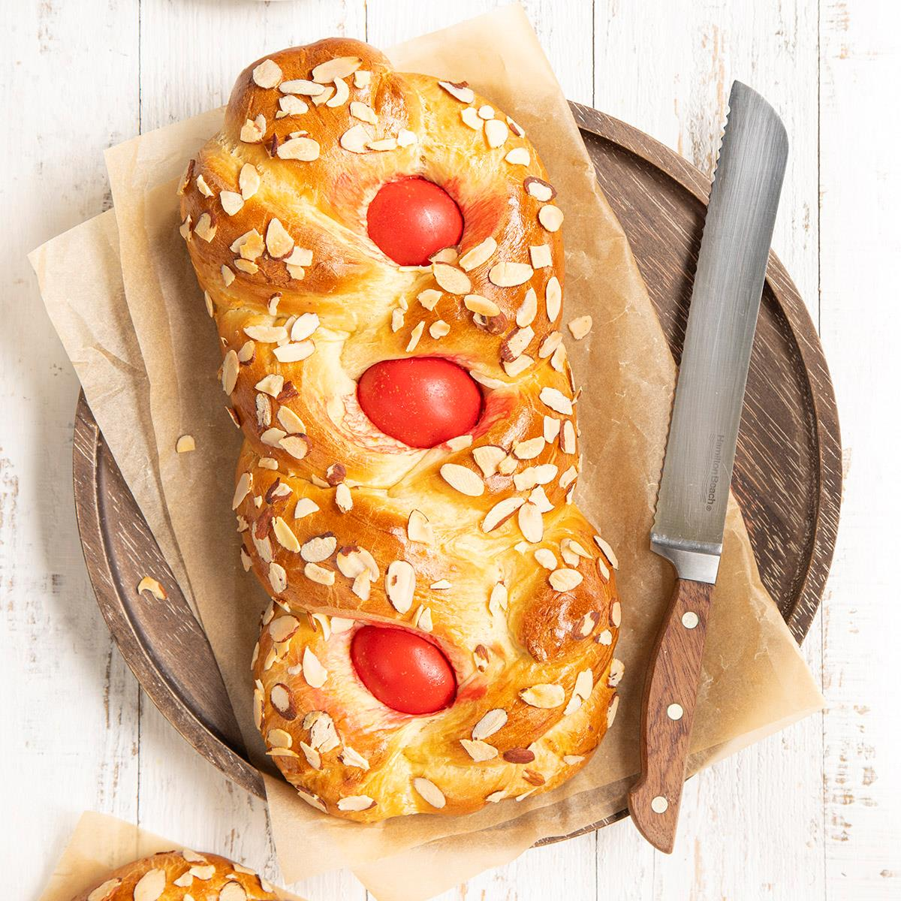
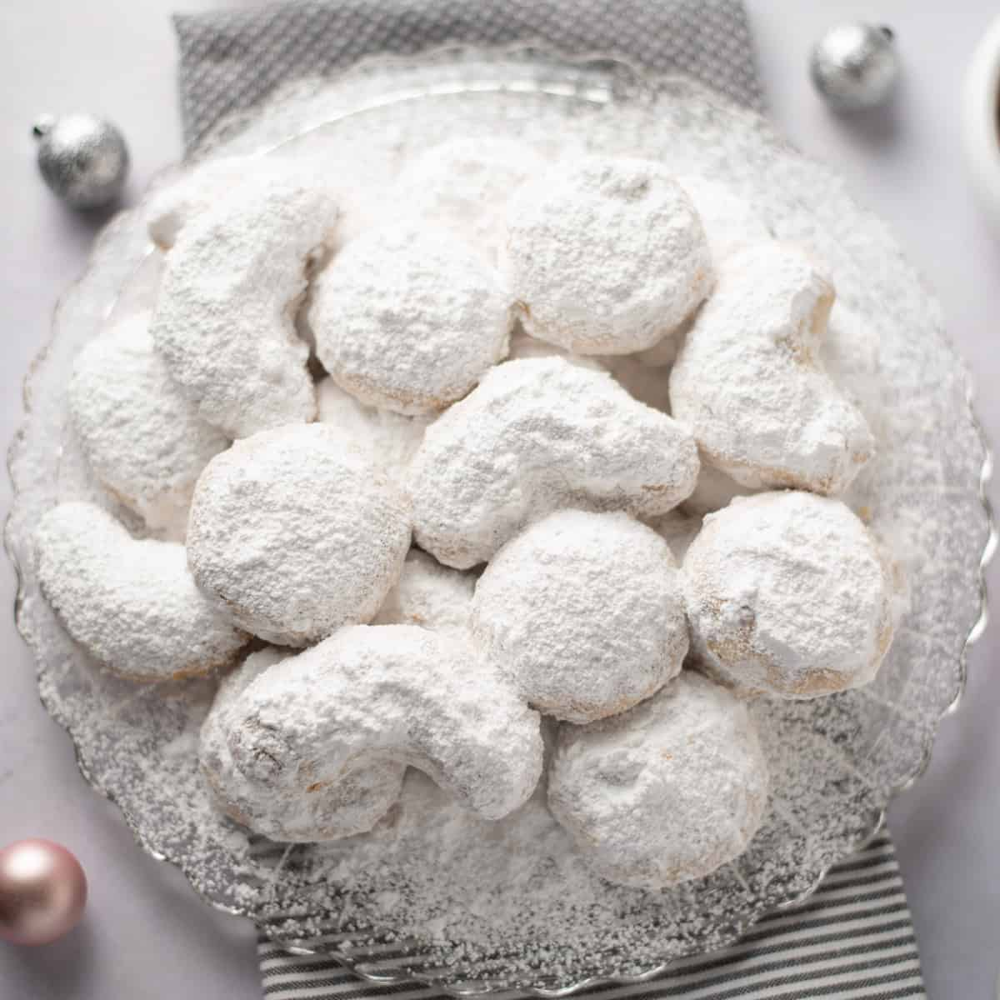

Wat verkopen wij?

Melomakarona

Tsoureki

Kourabiedes
Wat vinden de klanten?


Bakker-ei is beter dan gedacht!
Bij Bakker-Ei overtreffen ze alle verwachtingen. De producten zijn voortreffelijk, de sfeer is warm en gastvrij, en de service is ongeëvenaard, de winkel die niet bestaat is zelfs geweldig. Absoluut een aanrader voor liefhebbers van kwaliteit en vakmanschap.

Ik voel me opgelicht, verder top.
Bakker-ei had goed brood, maar ik voel me opgelicht. Ik verwachtte eieren, maar die kreeg ik niet. Ook is het brood te lekker, ik wil het niet eten omdat ik anders niks meer lust.

Echt am-ei-zing!
Bij Bakker-Ei krijg je echt eieren voor je geld! Alles is hier ei-genlijk perfect: van ei-genzinnige tsoureki tot melomakarona waar je van smult. De service is ei-genaardig goed, en de sfeer is ei-ndeloos gezellig. Een broodeerlijke aanrader, ze maken echt geen ei van hun werk!